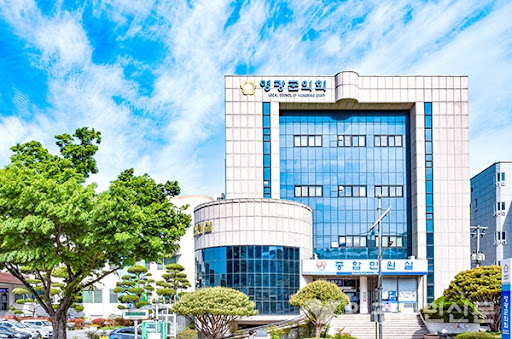

영광 청년 정착을 위해 가장 먼저 필요한 정책은 무엇입니까?
주거 지원, 일자리 창출, 창업 지원, 문화 복지 공간 확대 중 군민 여러분이 생각하는 최우선 과제를 선택해 주세요.
군민의 생각이 영광의 미래가 됩니다.

주거 지원, 일자리 창출, 창업 지원, 문화 복지 공간 확대 중 군민 여러분이 생각하는 최우선 과제를 선택해 주세요.
대형 주차장 확충, 무장애 노을 쉼터 조성, 야간 경관조명 보강, 체험형 콘텐츠 도입에 관한 의견을 받습니다.
체류형 방문객과 관계인구 확대를 위한 영광군 지원 조례안의 주요 내용을 확인하고 찬반 및 의견을 남겨주세요.
장날이면 어르신 보행자와 통행 차량이 뒤섞여 사고 위험이 큽니다. 속도제한 유도 및 펜스 조성을 제안합니다.
지역 청년들의 소모임, 스터디, 문화활동을 지원할 소규모 커뮤니티 거점 공간 조성을 요청합니다.
단순 야간 조명 설치를 넘어 보행 정비와 문화행사를 결합한 체류형 관광거리 조성을 제안합니다.